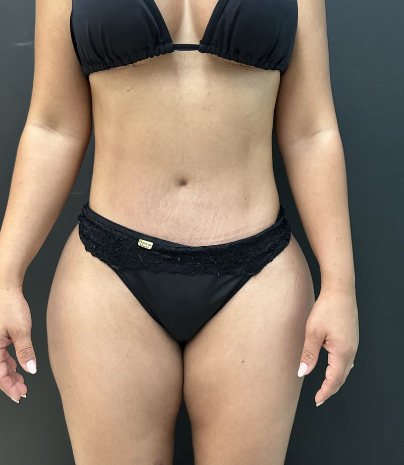
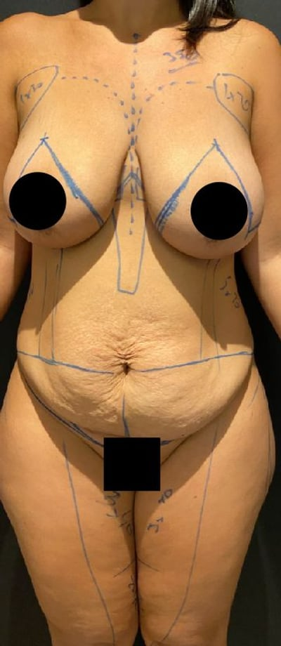

Abdômen
Avaliação do excesso de pele, da flacidez e das alterações no contorno abdominal após o emagrecimento.

Converse com o Dr. Felipe Villaça sobre as possibilidades para tratar a flacidez e melhorar o contorno corporal. Agende sua consulta online ou presencial em Belo Horizonte.
Agendar minha consultaO peso diminuiu, mas a pele no abdômen, nas mamas ou em outras regiões ainda incomoda?
Uma avaliação individual com o Dr. Felipe Villaça. Apresente seus incômodos e objetivos, mesmo que ainda não saiba qual procedimento considerar.
A flacidez e o excesso de pele podem continuar incomodando mesmo depois do emagrecimento.
Você veste uma roupa mais ajustada, coloca um biquíni ou se olha no espelho e percebe que, mesmo depois de emagrecer, ainda existe algo que incomoda.
Depois de uma grande perda de peso, a pele nem sempre acompanha completamente a redução do volume corporal.
Seu incômodo merece uma avaliação individual, considerando seus objetivos, seu momento e suas condições de saúde.

A consulta com o Dr. Felipe Villaça é o momento de entender o que pode ser feito no seu caso.
Cirurgias de contorno corporal podem remover excesso de pele e melhorar o formato das regiões tratadas, conforme a indicação individual.
Avaliação do excesso de pele, da flacidez e das alterações no contorno abdominal após o emagrecimento.
Avaliação das mudanças de pele, volume e formato que podem acontecer após uma grande perda de peso.
Braços, coxas e outras regiões também podem ser avaliados quanto ao excesso de pele após o emagrecimento.
Você não precisa escolher sozinha uma técnica.
Na consulta, você apresenta o que incomoda e avalia com o Dr. Felipe quais possibilidades podem fazer sentido para seu caso. Uma eventual indicação depende dessa avaliação.
Escolha entre consulta online e presencial.
Conheça experiências reais de pacientes e entenda melhor o trabalho do médico que você está considerando escolher.
As imagens apresentam exemplos de casos individuais. Resultados variam de pessoa para pessoa, e as imagens não substituem uma consulta.


Abdominoplastia · Caso real


"O Felipe chega num ponto de excelência tão bom, é tão perfeito o que ele faz, que a sua manutenção é mínima. A autoestima e a confiança que você ganha após o procedimento é absurdo!"

"De todo o processo — antes, durante e depois — eu vi a importância de confiar nele, e isso não tem preço. Tudo isso é válido quando se trata do seu corpo e da sua vida."

"Sem dúvidas eu escolheria o Dr. Felipe Villaça para fazer outra cirurgia. Tive uma experiência maravilhosa, tanto no resultado quanto no cuidado, zelo e capricho, dele e da equipe."

O resultado de outra paciente não representa garantia de resultado para você. Suas possibilidades precisam ser discutidas em uma avaliação individual.
Sim. A consulta desta campanha é com o próprio Dr. Felipe Villaça. A equipe realiza o contato inicial e organiza o agendamento.
Sim. Informe sua preferência no formulário. A consulta presencial é em Belo Horizonte; para a online, a equipe enviará as orientações de acesso. Avaliações presenciais complementares poderão ser necessárias antes de definir uma cirurgia.
Você pode solicitar uma consulta para discutir seu caso e o momento adequado para uma possível cirurgia. A estabilidade do peso e as condições de saúde são fatores importantes nessa decisão; emagrecer, por si só, não significa estar pronta para operar.
A consulta desta campanha tem o valor de R$950,00. Você pode escolher atendimento online ou presencial em Belo Horizonte. Após o envio do formulário, a equipe entra em contato para apresentar os horários disponíveis e confirmar o agendamento.
As possibilidades de cicatrizes fazem parte da avaliação e podem ser discutidas com o Dr. Felipe. Elas variam conforme o procedimento e as características de cada caso.
A recuperação varia conforme a cirurgia, sua extensão e as condições individuais. Na consulta, você pode discutir cuidados, limitações e como sua rotina pode ser considerada no planejamento.
O valor de uma eventual cirurgia depende da avaliação, dos procedimentos envolvidos e do planejamento individual. Caso haja indicação, o orçamento poderá ser apresentado a partir desse planejamento.
Não. A indicação depende de avaliação individual, considerando os incômodos, as condições clínicas, os objetivos e as possibilidades de cada pessoa. A consulta é um espaço para discutir se uma cirurgia faz sentido para seu caso.
Ainda ficou com alguma dúvida antes de solicitar sua consulta?
Falar com a equipe no WhatsAppConsulta de R$950,00, online ou presencial em Belo Horizonte. Preencha seus dados para a equipe organizar o agendamento.